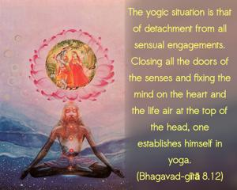
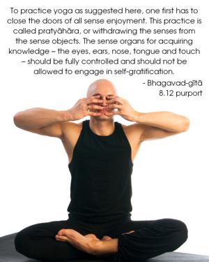

The yogic situation is that of detachment from all sensual engagements. Closing all the doors of the senses and fixing the mind on the heart and the life air at the top of the head, one establishes himself in yoga.


To practice yoga as suggested here, one first has to close the doors of all sense enjoyment. This practice is called pratyāhāra, or withdrawing the senses from the sense objects. The sense organs for acquiring knowledge – the eyes, ears, nose, tongue and touch – should be fully controlled and should not be allowed to engage in self-gratification. In this way the mind focuses on the Supersoul in the heart, and the life force is raised to the top of the head. In the Sixth Chapter this process is described in detail. But as mentioned before, this practice is not practical in this age. The best process is Kṛṣṇa consciousness. If one is always able to fix his mind on Kṛṣṇa in devotional service, it is very easy for him to remain in an undisturbed transcendental trance, or in samādhi.